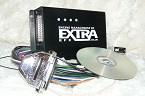
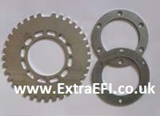
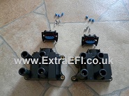
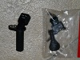

|
These kits are put together so you get everything you need to get your engine running in one go. You just need some HT leads with the Ford Gen 2 Coil connectors on them.
The MegaSquirt ECU has all the standard features you've come to expect from myself plus a fan output for optional cooling fan control, a tacho output for your rev counter (tacho output only for non-distributor setups) and an Air Temperature Sensor to allow the MAF to be removed. All ECU's, apart from the semi and full sequential fuel models, come with 2 injector bank outputs for batch firing of the injectors (as the Lucas ECUs.
If you just want the ECU without the other bits then see the Engine Management Page here.
All kits are MS2-Extra ECU's, if you want an MS1-Extra ECU then simply reduce the cost by £50 (RV8 PnP models are not available using the MS1), you will lose the idle stepper motor control with an MS1. An MS2-Extra and an MS3 ECU can drive the standard Lucas Idle Valve directly.
All these ECU's allow you to remove the restrictive AFM (Flapper or Hotwire). An Air Temperature Sensor is supplied and needs fitting into the air intake close to the throttle plate. The MAP sensor is built into the ECU and simply needs 'T'eeing into the fuel pressure regulator reference pipe, do not use the vacuum feed for the distributor as this is a ported hole.
Rover V8 Plug-N-Play (RV8 PnP) MegaSquirt ECU:
£875 + £30 postage
To directly replace the Lucas Hotwire (14CUX) on TVR's, Morgans, Rovers, etc.
This ECU plugs into the original Lucas loom replacing the Lucas Hotwire system (14CUX). This is only available as a wasted spark setup, (distributorless ignition). This gives you all of the benefits of the MegaSquirt ECU, mappable fuel and ignition, without the hassle of any modifications to the main wiring harness. It needs an ignition loom adding (supplied with the ECU) and a 36-1 wheel mounting on the crank, etc, but the basic Lucas loom is left as it was and is used to supply the throttle angle, coolant, air temp (from a new sensor), etc, to the MS ECU. This keeps your wiring as close to original as possible, so you don't lose any of the originality if that's a concern for you.
Kit Details:
At the heart of this ECU is an MS2 running the MS-Extra code.
Parts Included:
36-1 Crank Wheel (Designed for Rover V8)
Crank Sensor Bracket for RV8 (Please specify if it's for a Serp or Non Serp)
Crank Sensor (Brand New)
An Air Temperature Sensor (this needs fitting into the air flow.)
2 x Coil Packs (Brand New Ford Gen 2)
Spark Loom, with Coil Connectors and Crank Sensor Connectors all fitted
Tuning Software
RS232 Comms Cable
CD with manuals specifically designed around the MS2-Extra ECU as well as drawings for the RV8, etc.
Basically all the parts you need apart from the HT leads!
All these ECU's allow you to remove the restrictive MAF Meter.
Keeps the original Lucas Loom as it came from the factory.
Fuel and Wasted Spark ECU £875 + £30 postage in the UK and £40 postage abroad.
This comes with a 36-1 crank wheel, crank sensor, bracket and a pair of Ford coil packs.
I can also supply this kit with the GEMs coil packs for £65 extra.
Technical Details:
Plug-n-Play technology
Built-in MAP sensor (up to 21PSI of boost). This needs to be plumbed into the plenum. 'T'eed into Fuel pressure reference pipe.
16 x 16 Fuel Table. (Can be TPS or MAP based independant of ignition table)
12 x 12 Spark Table ( Can be TPS or MAP based independant of Fuel Table, with the Wasted Spark option)
Rev Limiter (fuel cut with fuel only, spark cut or both with wasted spark option)
Stepper Motor Idle valve control. (controls the Hotwire OEM idle valve)
Purge Valve control (programmable but setup for standard settings)
Coolant related ignition advance table (wasted spark option)
Inlet Air Temp related ignition retard table (wasted spark option)
Built in Air density correction.
Wideband or Narrowband lambda compatable. (Widebands need a controller, e.g. Innovates LC-1)
AFR target tables if using a wideband lambda.
Overrun fuel cut.
|
|
Fuel with EDIS8 Wasted Spark Ignition Control (Distributorless):
£575 + £25 postage
Unlike the RV8 PnP ECU's, this needs wiring into your existing system. This setup allows you to run without the need for a distributor. The EDIS8 module is triggered from the 36-1 crank wheel which doesn't have any drive chains and gears driving it like the distributor, so it gives a much more accurate ignition timing. The EDIS8 sends a signal to the MS ECU telling it the engine speed. The MS ECU then sends a signal back to the EDIS8 module telling it the required angle to fire the coilpacks at. The EDIS8 fires a set of four coils that are directly connected to pairs of cylinders, this means the distributor is no longer needed. It does mean you'll have to fit a 36-1 crank wheel (included in the kit) and a crank sensor (also included in the kit) but it's is easy to do, see here. The kit is based around the Ford EDIS8 system, this is a 12 pinned module which has the ignition coil drivers inside it, keeping potential noise away from the main ECU, so it's pretty immune to noise. See here for instructions on the EDIS8. This setup will then give you mappable fuel (16x16 table) and ignition (12x12 table). Again, it can control the Lucas Idle Valve, see here for more of the MS-Extra features.
Kit Includes:
MS2-Extra ECU
Air Temperature Sensor with connector
Wiring Loom (1m long)
36-1 Crank Wheel (Designed for Rover V8 as shown) or
36-1 Crank Wheel for non-RV8. You can choose 101.5mm, 171.5,
209.5mm for £20 less!
Crank Sensor Bracket for RV8 (Please specify if it's for a Serp or Non-Serp)
EDIS8 MODULES OUT OF STOCK
Crank Sensor (Brand New)
Crank Sensor Connector (Brand New)
Coil Packs x 2 (Brand New Ford Gen 2)
Coil Pack Connectors (Brand New)
Tuning Software
RS232 Comms Cable
CD with manuals specifically designed around the MS2-Extra ECU as well as drawings for the RV8, etc.
Basically all the parts you need apart from EDIS8 module and the HT leads!
£575 + £25 postage in the UK and £35 for postage abroad.
(For an MS1 REDUCE cost by £55 -- For an MS3 INCREASE cost by £85)
Also See:
RV8 Connector Pack with Relay for £60
Tacho Adaptor (Replicate the coil signal to a rev counter) for £30
Distributor Bung (Fill the hole of a Serp front end distributor) for £20
Knock Conditioner Unit for £35
Technical Details:
Built-in MAP Sensor (up to 21PSI of boost). This needs to be plumbed into the plenum. 'T'eed into Fuel pressure reference pipe.
16 x 16 Fuel Table. (Can be TPS or MAP based independant of ignition table)
12 x 12 Spark Table (Can be TPS or MAP based independant of fuel table)
Rev Limiter (fuel cut)
Stepper Motor Idle Valve Control (controls the Hotwire OEM idle valve)
Coolant related ignition advance table
Inlet Air Temp related ignition retard table
Built-in Air density correction.
Wideband or Narrowband lambda compatable. (Widebands need a controller, e.g. Innovates LC-1)
AFR target tables if using a wideband lambda.
Overrun Fuel Cut. |



 |
Fuel with Wasted Spark Ignition Control (Directly Fire Coils):£615 + £25 postage
Unlike the RV8 PnP ECU's, this needs wiring into your existing system. This setup is very similar to the EDIS8 kit but it doesn't use the EDIS8 module as it can directly fire the coil packs using built-in Bosch ignition drivers. I recommend fitting resistive spark plugs when using these ECU's as well as ensuring you have good engine grounds. This ECU allows you to run without the need for a distributor as the trigger to the ECU comes directly off a 36-1 crank which doesn't have any drive chains and gears driving it like the distributor, so it gives a much more accurate ignition timing. It does mean you'll have to fit a 36-1 crank wheel
(included in the kit) and a crank sensor (also included in the kit) but it's is easy to do, see here. This setup will then give you mappable fuel (16x16 table) and ignition (12x12 table). Again, it can control the Lucas Idle Valve, see here for more of the MS-Extra features.
Kit Includes:
MS2-Extra ECU
Air Temperature Sensor with connector.
Wiring
loom (1m long)
36-1 crank wheel (Designed for Rover V8 as shown) or
36-1 crank wheel for non-RV8 you can choose 101.5mm, 171.5, 209.5mm for £20 less!
Crank Sensor Bracket for RV8 (Please specify if its for a Serp or Non Serp)
Crank Sensor (Brand New)
Crank Sensor connector (Brand New)
Coil Packs x 2 (Brand New Ford Gen 2)
Coil Pack connectors (Brand New)
Tuning Software
RS232 Comms Cable
CD with manuals specifically designed around the MS2-Extra ECU as well as drawings for the Rv8, etc.
Basically all the parts you need apart from the HT leads!
£615 + £25 postage in the UK and £35 abroad.
(For an MS3 INCREASE the cost by £85)
Also See:
Complete Bespoke Wiring Loom (especially designed for the Rover V8) for £175
RV8 Connector Pack with Relay for £60
Tacho Adaptor (Replicate the coil signal to a rev counter) for £30
Distributor Bung (Fill the hole of a Serp front end distributor) for £20
Knock Conditioner Unit for £35
Technical Details:
Built-in MAP sensor (up to 21PSI of boost). This needs to be plumbed into the plenum. 'T'eed into Fuel pressure reference pipe.
16 x 16 Fuel Table. (Can be TPS or MAP based independant of ignition table)
12 x 12 Spark Table (Can be TPS or MAP based independant of fuel table)
Rev Limiter (fuel cut and or round robin spark cut)
Stepper Motor Idle Valve Control. (controls the Hotwire OEM idle valve)
Coolant related Ignition Advance Table
Inlet Air Temp related Ignition Retard Table
Built-in Air Density Correction.
Wideband or Narrowband lambda compatable. (Widebands need a controller, e.g. Innovates LC-1)
AFR Target Tables if using a Wideband Lambda.
Overrun Fuel Cut
|
|
Semi-Sequential Fuel with Wasted Spark Ignition Control (Directly Fire Coils):£675 + £25 postage
Unlike the RV8PnP ECU's, this needs wiring into your existing system. This setup is the same as the Direct Fire ECU but it has 4 injection output channels, so you can fire the fuel in a semi-sequential pattern.
See here for more on sequential and semi-sequential fueling.
This system has a 6x6 table for tuning the fuel firing angle to allow for air speed, etc, (load/engine speed) and a fueling trim table which allows a + - 12.5% deviation for each pair away from the main fueling map.
Again, it can control the Lucas Idle Valve, see here for more of the MS-Extra features.
(Hi - Impedance Injectors only!)
Kit Includes:
MS2-Extra ECU
Air Temperature Sensor with Connector
Wiring
Loom (1m long)
36-1 Crank Wheel (Designed for Rover V8 as shown) or
36-1 Crank Wheel for non-RV8 you can choose 101.5mm, 171.5, 209.5mm for £20 less!
Crank Sensor Bracket for RV8 (Please specify if it's for a Serp or Non Serp)
Crank Sensor (Brand New)
Crank Sensor Connector (Brand New)
Coil Packs x 2 (Brand New Ford Gen 2)
Coil Pack Connectors (Brand New)
Tuning Software
RS232 Comms Cable
CD with manuals specifically designed around the MS2-Extra ECU as well as drawings for the Rv8, etc.
Basically all the parts you need apart from the HT Leads!
£675 + £25 postage in the UK and £35 abroad.
(For an MS3 INCREASE cost by £85)
Also See:
Complete Bespoke Wiring Loom (especially designed for the Rover V8) for £175
RV8 Connector Pack with Relay for £60
Tacho Adaptor (Replicate the Coil Signal to a Rev Counter) for £30
Distributor Bung (Fill the hole of a Serp front end Distributor) for £20
Knock Conditioner Unit for £35
Technical Details:
Built-in MAP sensor (up to 21PSI of boost). This needs to be plumbed into the plenum. 'T'eed into Fuel pressure reference pipe.
16 x 16 Fuel Table. (Can be TPS or MAP based independant of ignition table)
12 x 12 Spark Table ( Can be TPS or MAP based independant of fuel table)
Trim Tables for each Fuel Bank output (Using EGT sensing you can tune each bank to run the same)
Rev Limiter (Fuel Cut and or round Robin Spark Cut)
Stepper Motor Idle Valve Control. (controls the Hotwire OEM idle valve)
Coolant related Ignition Advance Table
Inlet Air Temp related Ignition Retard Table
Built-in Air Density Correction
Wideband or Narrowband lambda compatable. (Widebands need a controller, e.g. Innovates LC-1)
AFR target tables if using a wideband lambda.
Overrun Fuel Cut
|
|
Full-Sequential Fuel with Wasted Spark Ignition Control:£895 + £30 postage
Unlike the RV8 PnP ECU's, this needs wiring into your existing system.
This is the ultimate setup for any engine. It essentially runs each cylinder individually (8 injector outputs). They all share a common fuel and ignition map, but each cylinder can be trimmed individually. This allows for as near a perfect tune as possible. See here for more on sequential fueling. This comes with a modified distributor to give the cam signal needed for a sequential fuelling system. The system has a 12x12 table for tuning the fuel firing angle to allow for air speed, etc, (load/engine speed) and a 6x6 fueling trim table which allows a + - 12.5% deviation for each injector away from the main fueling map. Again, it can control the Lucas Idle Valve, it also has launch control, switchable maps, SD card data-logging, 2 spare analogue inputs (Second Lambda, etc.) as well as 4 programmable outputs that can be used for items such as fan control, warning led, etc.
(Hi - Impedance Injectors only!)
Kit Includes:
MS3-Extra ECU with MS3X (expansion) Card
Air Temperature Sensor with Connector
Wiring Loom (1m long)
36-1 Crank Wheel (Designed for Rover V8 as shown) or
36-1 Crank Wheel for non-RV8 you can choose 101.5mm, 171.5, 209.5mm for £20 less!
Crank Sensor Bracket for RV8 (Please specify if it's for a Serp or Non Serp)
Crank Sensor (Brand New)
Crank Sensor Connector (Brand New)
Distributor Based Cam Sensor (Exchange Unit, £45 surcharge)
Coil Packs x 2 (Brand New VW units with built-in Ignitors)
Coil Pack Connectors (Brand New)
Tuning Software
USB Comms Cable
CD with manuals specifically designed around the MS3 ECU as well as drawings for the Rv8, etc.
Basically all the parts you need apart from the HT Leads!
£895 + £30 postage in the UK and £40 abroad.
Also see:
Complete Bespoke Wiring Loom (especially designed for the Rover V8) for £245
RV8 Connector Pack with Relay for £60
Tacho Adaptor (Replicate the coil signal to a rev counter) for £30
Distributor Bung (Fill the hole of a Serp front end distributor) for £20
Knock Conditioner Unit for £35
Technical Details:
Built-in MAP Sensor (up to 21PSI of boost) This needs to be plumbed into the plenum. 'T'eed into Fuel pressure reference pipe.
16 x 16 Fuel Table. (Can be TPS or MAP based independant of ignition table)
16 x 16 Spark Table ( Can be TPS or MAP based independant of fuel table)
Trim Tables for each Fuel Bank output (Using EGT sensing you can tune each bank to run the same)
Rev Limiter (Fuel Cut and or Round Robin Spark Cut)
Stepper Motor Idle Valve Control.(controls the Hotwire OEM Idle valve)
Coolant related Ignition advance Table
Inlet Air Temp related Ignition Retard Table
Built in Air Density Correction
Wideband or Narrowband lambda compatable. (Widebands need a controller, e.g. Innovates LC-1)
AFR Target Tables if using a wideband lambda.
Overrun Fuel Cut
And lots lots more!! This is the ultimate MegaSquirt after all!
|
|
|


{kind=link}
{kind=link}
{kind=link}
{kind=link}
{kind=link}
{kind=link}
{kind=link}
{kind=link}
{kind=link}
{kind=link}